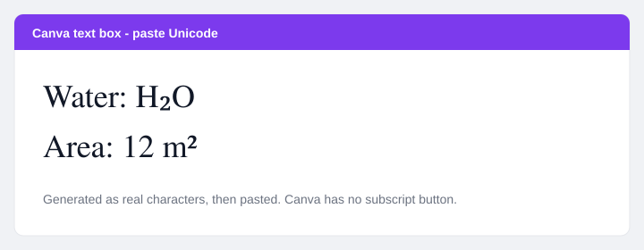

Does Canva have subscript?
No built-in button. To add subscript or superscript in Canva, paste Unicode (H₂O, CO₂, x², m²) into a text box. Generate it with the subscript generator or superscript generator, then paste.
Canva’s text editor can change size, weight, and color. It does not offer Word’s Ctrl + = subscript. That is why chemistry posters and area labels look wrong until you paste real characters. Canva’s own help on using text covers styling, not sub/super.
How to add subscript in Canva (Unicode paste)
- Open the subscript generator.
- Type
H2OorCO2. Keep Formula mode on so only the digits drop. - Click Copy.
- In Canva, double-click a text box and paste.
For superscript (x², 12 m², footnote ¹), use the superscript generator with the same copy-paste steps. Trademark ™ is also a superscript-style character — generate or paste ™ the same way.

How to fake subscript in Canva without Unicode
If a font refuses unusual characters, split the formula into two text boxes:
- Type
Hin one box and2in another, thenOin a third — or typeH2Oand duplicate the box. - Shrink the digit’s font size.
- Nudge it down (subscript) or up (superscript) with the position controls.
This is slower and breaks when you change the heading size. Prefer Unicode when the font supports it (most default Canva fonts do for ₀–₉ and ² ³).
Chemistry vs exponents in Canva
| Goal | Type in the tool | Paste into Canva |
|---|---|---|
| Water | H2O + Subscript + Formula | H₂O |
| Carbon dioxide | CO2 + Subscript + Formula | CO₂ |
| Squared metres | m2 + Superscript | m² |
| E = mc² | E=mc2 + Superscript | E=mc² |
Need a longer chemistry list? Use CO₂ and H₂O copy paste. For Word’s real subscript button, see subscript in Word — that method does not exist in Canva.
Does Unicode paste work in Canva Docs, Presentations, and print?
- Designs / Presentations / Instagram posts: Yes, in a text box, on current Canva.
- Download as PNG or PDF: Usually yes — the character is drawn as text or outlined. Proof the PDF before print.
- Canva Docs: Paste the same way. If a template font is decorative, switch to a system-like font.
Tiny social letters (ʰᵉˡˡᵒ) are a different job. Those belong on the small text generator, not in a chemistry poster.
Related guides
FAQ: subscript in Canva
How do I add superscript in Canva?
Paste Unicode from the superscript generator. Canva has no superscript shortcut like Word’s Ctrl + Shift + =.
Why does my ₂ turn into a box?
The font lacks that glyph. Change the Canva font to something like Open Sans, Arial, or Times, then paste again.
Can I subscript in Canva on mobile?
Yes. Generate on the phone, copy, open the Canva app, tap the text box, paste.